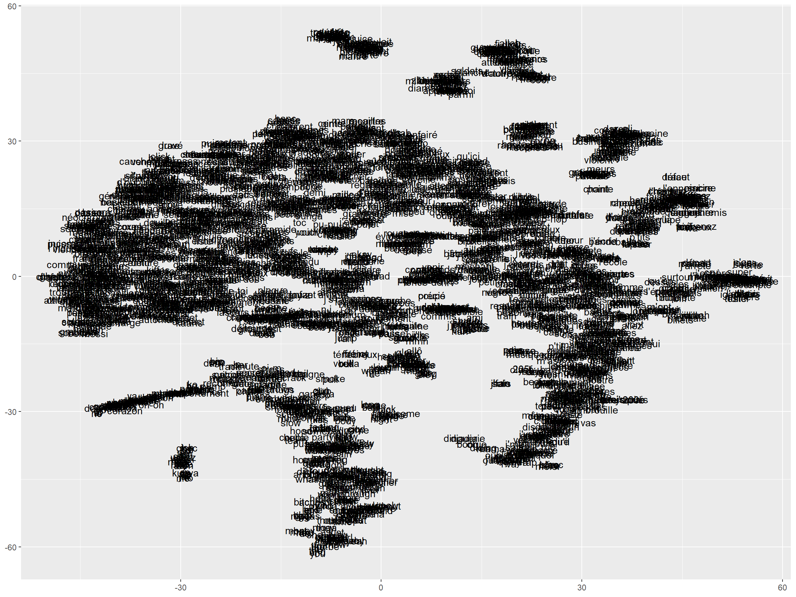
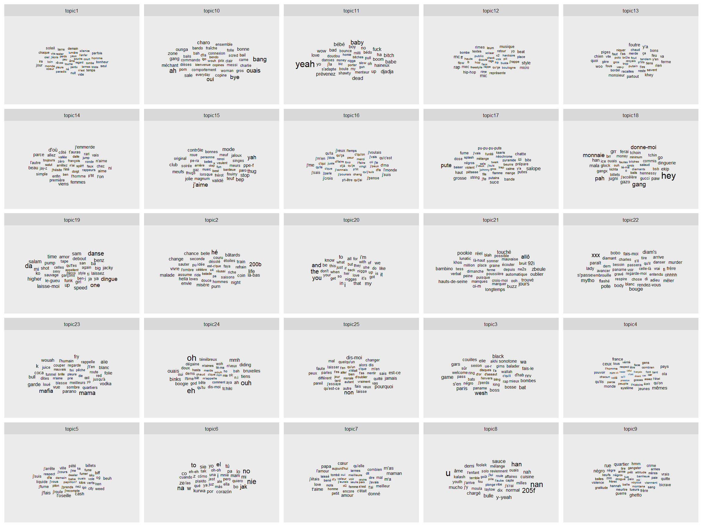
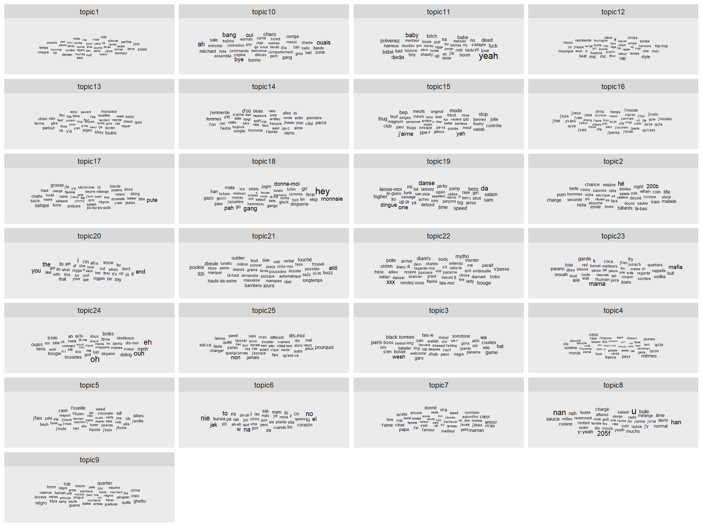
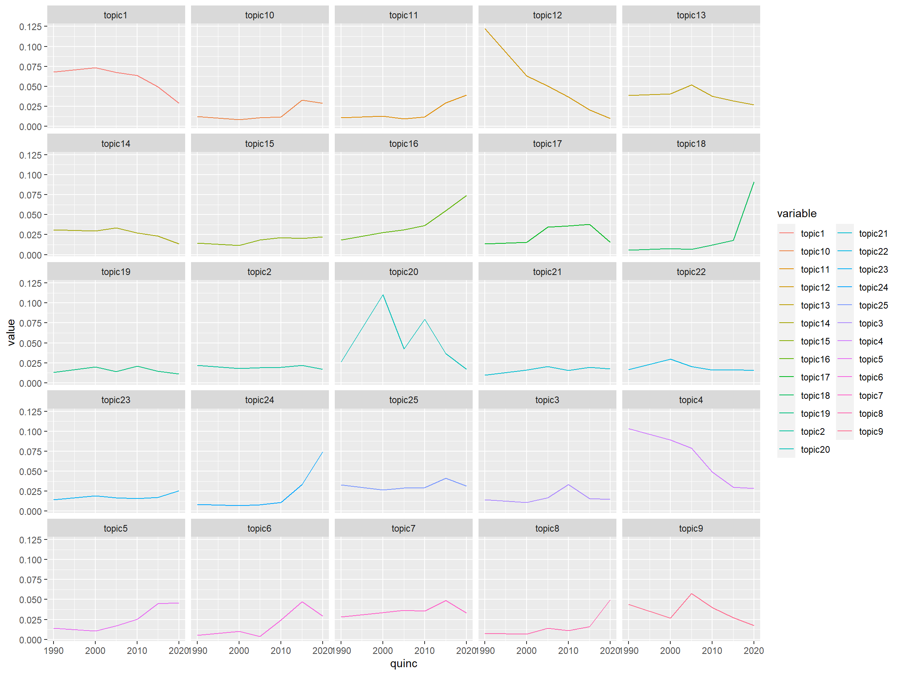

library(tidyverse)
library(quanteda)
library(quanteda.textmodels)
library(quanteda.textstats)
library(ggwordcloud)
library(quanteda.textplots)
library(tidytext)
library(udpipe)
library(Rtsne)
library(ggrepel)
library(seededlda)
# syntaxis and lexical annotations
My_Theme = theme(
axis.title.x = element_text(size = 10),
axis.text.x = element_text(size = 7),
axis.text.y = element_text(size = 7),
axis.title.y = element_text(size = 10))
theme_set(theme_minimal()+ theme_set(theme_minimal()))
text1<-read.csv("RapLyrics.csv") %>%
filter(n_words>100 & n_words<2000 )Rap francais

toolbox
Le rap c’est difficile à lire . Les scores de lisibilités sont incalculables, car la phrase est dissoutes, la ponctuation disparue. D’ailleurs la ponctuation est venue tardivement, le latin n’en avait pas. Qu’est-ce qui fait une phrase en l’absence de ponctuation ? La structure de la rime ? Le tempo de la phrase? Avons nous les outils ?
Le rap est un langage initiatique et ésotérique, un langage cryptique. plus difficile à lire que la philosophie. Les IA n’arrivent même pas bien à détecter leur langue.
Un biais apparaît par le fait que les transcriptions en vers, ignorent la ponctuation …. et produisent des phrases longues.
Un Tsne with tf-idf
On calcule les tf idf et on projette les similarités dans un espace de faible dimension.
Une approche directe
library(quanteda)
corp<-text1 %>%select(Artiste, Year, Paroles, quinc, Views)
corpus<- corpus(corp$Paroles, docvars =corp)
toks<-tokens(
corpus,
what = "word",
remove_punct = TRUE,
remove_symbols = TRUE,
remove_numbers = TRUE,
remove_url = TRUE,
remove_separators = TRUE,
split_hyphens = FALSE,
split_tags = FALSE,
include_docvars = TRUE,
padding = FALSE) %>%
tokens_remove(stopwords("french"))
#on pourrait chercher le ngram et les colocs..
dfm<- dfm(toks) %>% dfm_trim(min_termfreq = 50)
dfm_tf_idf<-dfm_tfidf(dfm)
df_tf_idf<-as.data.frame(dfm_tf_idf)
#just to keep words aside
foo2<-df_tf_idf%>%
select(-doc_id)%>%
t()
word<-as.data.frame(rownames(foo2))%>%
rename(word=1)
set.seed(42) # Sets seed for reproducibility
tsne_out <- Rtsne(foo2,
initial_dims = 20,
perplexity = 20,
max_iter = 2000,
partial_pca=TRUE,
theta=.5,
num_threads=4,
verbose=1,
check_duplicates = FALSE)Performing PCA
Read the 3239 x 20 data matrix successfully!
OpenMP is working. 4 threads.
Using no_dims = 2, perplexity = 20.000000, and theta = 0.500000
Computing input similarities...
Building tree...
Done in 0.20 seconds (sparsity = 0.028371)!
Learning embedding...
Iteration 50: error is 87.324083 (50 iterations in 0.27 seconds)
Iteration 100: error is 75.303861 (50 iterations in 0.22 seconds)
Iteration 150: error is 74.154874 (50 iterations in 0.21 seconds)
Iteration 200: error is 73.976685 (50 iterations in 0.21 seconds)
Iteration 250: error is 73.936767 (50 iterations in 0.20 seconds)
Iteration 300: error is 1.994656 (50 iterations in 0.20 seconds)
Iteration 350: error is 1.592405 (50 iterations in 0.20 seconds)
Iteration 400: error is 1.407859 (50 iterations in 0.22 seconds)
Iteration 450: error is 1.307716 (50 iterations in 0.21 seconds)
Iteration 500: error is 1.256503 (50 iterations in 0.20 seconds)
Iteration 550: error is 1.230403 (50 iterations in 0.21 seconds)
Iteration 600: error is 1.212030 (50 iterations in 0.22 seconds)
Iteration 650: error is 1.195367 (50 iterations in 0.23 seconds)
Iteration 700: error is 1.180942 (50 iterations in 0.21 seconds)
Iteration 750: error is 1.172035 (50 iterations in 0.21 seconds)
Iteration 800: error is 1.163558 (50 iterations in 0.22 seconds)
Iteration 850: error is 1.155483 (50 iterations in 0.22 seconds)
Iteration 900: error is 1.145935 (50 iterations in 0.22 seconds)
Iteration 950: error is 1.137713 (50 iterations in 0.22 seconds)
Iteration 1000: error is 1.131719 (50 iterations in 0.22 seconds)
Iteration 1050: error is 1.125397 (50 iterations in 0.22 seconds)
Iteration 1100: error is 1.120188 (50 iterations in 0.22 seconds)
Iteration 1150: error is 1.117586 (50 iterations in 0.22 seconds)
Iteration 1200: error is 1.115806 (50 iterations in 0.22 seconds)
Iteration 1250: error is 1.113471 (50 iterations in 0.22 seconds)
Iteration 1300: error is 1.111459 (50 iterations in 0.22 seconds)
Iteration 1350: error is 1.108885 (50 iterations in 0.22 seconds)
Iteration 1400: error is 1.107088 (50 iterations in 0.22 seconds)
Iteration 1450: error is 1.104760 (50 iterations in 0.22 seconds)
Iteration 1500: error is 1.102906 (50 iterations in 0.23 seconds)
Iteration 1550: error is 1.101000 (50 iterations in 0.23 seconds)
Iteration 1600: error is 1.098834 (50 iterations in 0.22 seconds)
Iteration 1650: error is 1.096692 (50 iterations in 0.22 seconds)
Iteration 1700: error is 1.094645 (50 iterations in 0.22 seconds)
Iteration 1750: error is 1.092050 (50 iterations in 0.22 seconds)
Iteration 1800: error is 1.089819 (50 iterations in 0.22 seconds)
Iteration 1850: error is 1.087521 (50 iterations in 0.22 seconds)
Iteration 1900: error is 1.084809 (50 iterations in 0.22 seconds)
Iteration 1950: error is 1.082724 (50 iterations in 0.22 seconds)
Iteration 2000: error is 1.081217 (50 iterations in 0.22 seconds)
Fitting performed in 8.75 seconds.tsne_out1<-tsne_out$Y
tsne_out2<-as.data.frame(cbind(word,tsne_out1)) #%>% left_join(words)
ggplot(tsne_out2, aes(x=`1`, y=`2` ))+
geom_text(aes(label=word,
# size=log(total_word),
# alpha=10-log(total_word)
))+
theme(legend.position = "none")+
labs(x=NULL, y=NULL)+
scale_size(range = c(.1, 3))
ggsave("tsne.svg",plot=last_plot(), width = 30, height = 20, units = "cm")Topic modelling
Une première version spontanée sur la base des tf-idf.
library(seededlda)
set.seed(1234)
slda <- textmodel_lda(dfm_tf_idf, 25, verbose=TRUE)Fitting LDA with 25 topics
...initializing
...Gibbs sampling in 2000 itterations
...iteration 100
...iteration 200
...iteration 300
...iteration 400
...iteration 500
...iteration 600
...iteration 700
...iteration 800
...iteration 900
...iteration 1000
...iteration 1100
...iteration 1200
...iteration 1300
...iteration 1400
...iteration 1500
...iteration 1600
...iteration 1700
...iteration 1800
...iteration 1900
...iteration 2000
...computing theta and phi
...completephi<-slda$phi %>%
as.data.frame() %>%
rownames_to_column(var="topic") %>%
pivot_longer(-topic,names_to = "word", values_to = "p")%>%
arrange(topic,p) %>%
group_by(topic)%>%
top_n(40)
ggplot(phi, aes(label=word))+
geom_text_wordcloud(aes(size=p)) +
facet_wrap(vars(topic), ncol=5)+
theme(strip.text.x = element_text(size = 6))+
scale_size(range = c(1, 4))
ggsave("topic_v01.svg",plot=last_plot(), width = 30, height = 20, units = "cm")
set.seed(1234)
ggplot(phi, aes(label=word))+
geom_text_wordcloud(aes(size=p)) +
facet_wrap(vars(topic), ncol=4)+
theme(strip.text.x = element_text(size =9))+
scale_size(range = c(1, 4))
theta<-as.data.frame(slda$theta)phi\(topic[phi\)topic==“topic1”]<-“love famille” phi\(topic[phi\)topic==“topic2”]<-“Love” phi\(topic[phi\)topic==“topic3”]<-“Ennui” phi\(topic[phi\)topic==“topic4”]<-“Exister socialement” phi\(topic[phi\)topic==“topic5”]<-“ouai ouai” phi\(topic[phi\)topic==“topic6”]<-“Amour/haine” phi\(topic[phi\)topic==“topic7”]<-“Le monde” phi\(topic[phi\)topic==“topic8”]<-“Fou/fort” phi\(topic[phi\)topic==“topic9”]<-“Mélancolie” phi\(topic[phi\)topic==“topic10”]<-“Rapper” phi\(topic[phi\)topic==“topic11”]<-“Le Temps qui passe” phi\(topic[phi\)topic==“topic12”]<-“délinquance” phi\(topic[phi\)topic==“topic13”]<-“Amis/ ennemis” phi\(topic[phi\)topic==“topic14”]<-“Onomatopées” phi\(topic[phi\)topic==“topic15”]<-“Responsabilité” phi\(topic[phi\)topic==“topic16”]<-“respect/gang” phi\(topic[phi\)topic==“topic17”]<-“Comprendre” phi\(topic[phi\)topic==“topic18”]<-“American” phi\(topic[phi\)topic==“topic19”]<-“Dignité” phi\(topic[phi\)topic==“topic20”]<-“Violence”
to do
test the semi-supervised seedlda model
and stm for time évolution.
topic<-cbind(text1,theta)
foo<-topic %>%
group_by(quinc)%>%
summarise(topic1=mean(topic1, na.rm=TRUE),
topic2=mean(topic2, na.rm=TRUE),
topic3=mean(topic3, na.rm=TRUE),
topic4=mean(topic4, na.rm=TRUE),
topic5=mean(topic5, na.rm=TRUE),
topic6=mean(topic6, na.rm=TRUE),
topic7=mean(topic7, na.rm=TRUE),
topic8=mean(topic8, na.rm=TRUE),
topic9=mean(topic9, na.rm=TRUE),
topic10=mean(topic10,na.rm=TRUE),
topic11=mean(topic11,na.rm=TRUE),
topic12=mean(topic12,na.rm=TRUE),
topic13=mean(topic13,na.rm=TRUE),
topic14=mean(topic14,na.rm=TRUE),
topic15=mean(topic15,na.rm=TRUE),
topic16=mean(topic16,na.rm=TRUE),
topic17=mean(topic17,na.rm=TRUE),
topic18=mean(topic18,na.rm=TRUE),
topic19=mean(topic19,na.rm=TRUE),
topic20=mean(topic20,na.rm=TRUE),
topic21=mean(topic21,na.rm=TRUE),
topic22=mean(topic22,na.rm=TRUE),
topic23=mean(topic23,na.rm=TRUE),
topic24=mean(topic24,na.rm=TRUE),
topic25=mean(topic25,na.rm=TRUE),
)%>%
pivot_longer(-quinc, names_to = "variable", values_to = "value" )
ggplot(foo, aes(x=quinc,y=value, group=variable ))+
geom_line(stat="identity", aes(color=variable))+
facet_wrap(vars(variable),ncol=5)